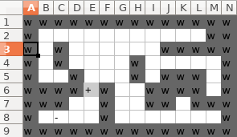
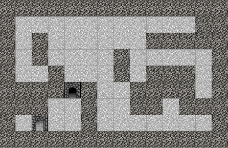

2018-04-02-haskell-rogue-like_04
Haskell roguelike - Map loading
The world grid
The roguelike world has a grid of data, the map. Originally I used a vector of vectors (i.e rows and columns) to store the entities. This did not work out well for two reasons. Firstly working with a multi-dimensional vector was a bit of a pain. The biggest problem however is that its just very inefficient. Many locations on the map are empty but with a vector all locations contain data. (Yes there are sparse vectors, but pain…).
In the end I decided to use, wait for it, a map (i.e. Data.Map.Strict). A map makes accessing any location easy and fast, it also only stores positions that are populated. The resulting code simplification was quite significant. If you are building a roguelike think about this decision carefully. Changing your core data structure has a large impact on the rest of your code.
Generating / designing maps
Typically roguelikes have procedurally generated maps, this is one of the features that adds to their “re-playability”. Procedurally generating data is a fascinating project on its own. I’m not going to cover it, for now as I’d rather focus on more fundamental concerns. If you want some ideas for how to implement it, take a look at the brilliant Procedural Content Generation Wiki. BTW don’t forget that some combination of static and procedural may also be a good idea, either on different levels or even both combined on a single level.
So I decided to work with designed (static) maps and rather than going to all the trouble of building a level editor, I simply used a spreadsheet to build the grid and then save the map as CSV.

Which generates the CSV
w,w,w,w,w,w,w,w,w,w,w,w,w,w
w,,,,,,,,,,,,w,w
w,,w,,,,,,,w,w,w,w,w
w,,w,,,,,w,,,,,,w
w,,,w,,,,w,,w,w,w,,w
w,w,w,w,+,w,,,w,w,w,w,,w
w,w,w,,,w,,,w,w,,w,w,w
w,,-,,,w,,,,,,,,w
w,w,w,w,w,w,w,w,w,w,w,w,w,wThis is pretty much an ASCII version of the game, with each letter representing an entity
w= a wall+= an open door-= a closed door
Lets associate entities with these “load texts” and change mkData to create a map of load text to Entity. (Remember that all these changes are also show in patch format below if that helps you see what changed).
04_load_map/src/Entities.hs (14 to 38)
tiles :: Map E.EntityType Tile
entities :: Map E.EntityType Entity
loadTexts :: Map Text Entity
(tiles, entities, loadTexts) =
let is = [ (E.Blank , (41, 13), Nothing)
, (E.Door , (26, 15), Just "+")
, (E.DoorClosed, (21, 15), Just "-")
, (E.Wall , ( 9, 14), Just "w")
]
in
let mkData (typ, pos@(x, y), l) (tiles', entities', loads') =
let (entity, tile) = mkEntityAndTile (x * 100 + y) typ pos in
( Map.insert typ tile tiles'
, Map.insert typ entity entities'
, maybe loads' (\load -> Map.insert load entity loads') l
)
in
foldr
mkData
( Map.fromList [(E.Unknown, tileUnknown)]
, Map.fromList [(E.Unknown, entityUnknown)]
, Map.empty
)
isWorld vs player coordinates
The world map is theoretically infinitely large and is represented as a Cartesian plane, the centre point being (0,0)
+ x
^
|
Q2 | Q1
|
-y <-------+-------> +y
|
Q3 | Q4
|
v
- x When drawing graphics it is much simpler however to work with a coordinate system that has (0,0) be the top left corner. With +x going down the screen and +y going right along the screen. This coordinate system is typically used for graphics as it maps to rows and columns.
(0,0)
+-------> +y
|
|
|
v
+ x Coordinate transformation
The WorldPos and PlayerPos newtypes are used to store coordinates from these two systems and prevent you accidentally confusing one (Int, Int) with another, yay types!
04_load_map/src/GameCore.hs (49 to 50)
newtype WorldPos = WorldPos (Int, Int) deriving (Show, Eq, Ord)
newtype PlayerPos = PlayerPos (Int, Int) deriving (Show, Eq, Ord)Transforming between the two coordinate systems is pretty easy. Remember that the player’s top left = (0, 0) = the top left corner of their screen.
04_load_map/src/GameEngine.hs (209 to 216)
playerCoordToWorld :: WorldPos -> PlayerPos -> WorldPos
playerCoordToWorld (WorldPos (worldTopX, worldTopY)) (PlayerPos (playerX, playerY)) =
WorldPos (worldTopX + playerX, worldTopY - playerY)
worldCoordToPlayer :: WorldPos -> WorldPos -> PlayerPos
worldCoordToPlayer (WorldPos (worldTopX, worldTopY)) (WorldPos (worldX, worldY)) =
PlayerPos (worldX - worldTopX, -(worldY - worldTopY))Viewports
The player can only view a small portion of the potentially infinite world map, the portion that fits on their screen. This portion of the map is called the view port.
+ x
^
|
-y <---+-----------------------> +y
|
| (0,0)
| +-------> +y
| |
| | (viewport)
| |
| v
| + x
v
- x The world map
Types
The world needs a map, where map is Data.Map.Strict
04_load_map/src/GameCore.hs (28 to 31)
data World = World { _wdPlayer :: !Player
, _wdConfig :: !Config
, _wdMap :: !(Map WorldPos Entity)
}For the player we need to know where the current view port’s (0, 0) is in the world map
04_load_map/src/GameCore.hs (20 to 23)
data Player = Player { _plConn :: !Host.Connection
, _plScreenSize :: !(Int, Int)
, _plWorldTopLeft :: !WorldPos
}Loading the map CSV
The top level manageConnection reads the map CSV as text.
04_load_map/src/GameEngine.hs (33 to 41)
manageConnection :: Host.Connection -> IO ()
manageConnection conn = do
initCmd <- conn ^. conReceiveText
case parseCommand initCmd of
Just ("init", cmdData) -> do
mapData <- Txt.readFile "worlds/simple.csv"
case initialiseConnection conn cmdData mapData ofinitialiseConnection and bootWorld are passed the map data, and then loadWorld is called.
04_load_map/src/GameEngine.hs (70 to 96)
initialiseConnection :: Host.Connection -> [Text] -> Text -> Either Text World
initialiseConnection conn cmdData mapData =
case parseScreenSize cmdData of
Nothing ->
Left "missing / invalid screen size"
Just (width, height) ->
Right $ bootWorld conn (width, height) mapData
bootWorld :: Host.Connection -> (Int, Int) -> Text -> World
bootWorld conn screenSize mapData =
let config = mkConfig in
World { _wdPlayer = mkPlayer
, _wdConfig = config
, _wdMap = loadWorld E.loadTexts mapData
}
where
mkConfig =
Config { _cfgKeys = Map.fromList [("t", "test")] }
mkPlayer =
Player { _plConn = conn
, _plScreenSize = screenSize
, _plWorldTopLeft = WorldPos (0, 0)
}loadWorld calls parseWorld to parse the CSV and then converts the player coordinates to world coordinates.
parseWorld does the following
- Split the data into lines
- Split every line on the
,character and remove leading and trailing spaces - Use
Data.List.Index.imapto map over the lines, using the index as the row - loadCol creates a (x, y) pair for every cell that has a load text
(I’m not using a CSV parser as I control the CSV generation and know its well formed and simple. Don’t do this for any other scenario :) )
04_load_map/src/GameEngine.hs (183 to 204)
loadWorld :: Map Text Entity -> Text -> Map WorldPos Entity
loadWorld chars csv =
translatePlayerMap (WorldPos (0, 0)) $ parseWorld chars csv
parseWorld :: Map Text Entity -> Text -> Map PlayerPos Entity
parseWorld chars csv =
let ls = Txt.lines csv in
let lss = Txt.strip <<$>> (Txt.splitOn "," <$> ls) in
let entityMap = Lst.imap (\r cs -> Lst.imap (loadCol r) cs) lss in
Map.fromList . catMaybes $ concat entityMap
where
loadCol y x c = case Map.lookup c chars of
Nothing -> Nothing
Just a -> Just (PlayerPos (x, y), a)
translatePlayerMap :: WorldPos -> Map PlayerPos Entity -> Map WorldPos Entity
translatePlayerMap worldTopLeft entityMap =
let entitysInWorld = Ar.first (playerCoordToWorld worldTopLeft) <$> Map.toList entityMap in
Map.fromList entitysInWorldDrawing
We now need a way to tell the frontend which tiles to draw A drMapData field is added to UiDrawCommand. This field has an array of (x, y, tileId) that can be sent to the frontend
04_load_map/src/GameCore.hs (76 to 80)
data UiDrawCommand = UiDrawCommand
{ drCmd :: !Text
, drScreenWidth :: !Int
, drMapData :: ![(Int, Int, Int)]
} deriving (Generic)drawAndSend is modified to send the UiDrawCommand
04_load_map/src/GameEngine.hs (166 to 178)
drawAndSend :: World -> IO ()
drawAndSend world = do
let playerTiles = drawTilesForPlayer world (world ^. wdMap)
let cmd = Ae.encodeText UiDrawCommand { drCmd = "draw"
, drScreenWidth = world ^. wdPlayer ^. plScreenSize ^. _1
, drMapData = mkDrawMapData <$> Map.toList playerTiles
}
sendData (world ^. wdPlayer ^. plConn) cmd
where
mkDrawMapData :: (PlayerPos, Tile) -> (Int, Int, Int)
mkDrawMapData (PlayerPos (x, y), tile) = (x, y, tile ^. tlId)drawTilesForPlayer creates a map of tiles that need to be drawn.
- Get the player
- Get the player’s top left corner
- Get the player’s screen size
- Calculate the bottom right corner, i.e. the size of the viewport
- Remove blank tiles, the UI draws a blank background each time, so no point redrawing them
- Only keep tiles within the viewport
- Get the tiles for each entity
- Convert to player coordinates
04_load_map/src/GameEngine.hs (221 to 249)
drawTilesForPlayer :: World -> Map WorldPos Entity -> Map PlayerPos Tile
drawTilesForPlayer world entityMap =
let
player = world ^. wdPlayer
-- Top left of player's grid
(WorldPos (topX, topY)) = player ^. plWorldTopLeft
-- Players screen/grid dimensions
(screenX, screenY) = player ^. plScreenSize
-- Bottom right corner
(bottomX, bottomY) = (topX + screenX, topY - screenY)
-- Filter out blank
noEmptyMap = Map.filter (\e -> e ^. enTile ^. tlName /= "blank") entityMap
-- Only get the entitys that are at positions on the player's screen
visibleEntitys = Map.filterWithKey (inView topX topY bottomX bottomY) noEmptyMap
-- Get the tile for each entity
tileMap = (^. enTile) <$> visibleEntitys
in
-- Get it with player positions
Map.mapKeys (worldCoordToPlayer $ player ^. plWorldTopLeft) tileMap
where
inView topX topY bottomX bottomY (WorldPos (x, y)) _ =
x >= topX && x < bottomX && y > bottomY && y <= topYNext a small addition to the JavaScript. In runWebSocket when the draw command is received the code does a forEach over the (x, y, tileId) array and calls drawTile for each.
04_load_map/html/rogue.js (115 to 133)
case "draw": {
config.drawId = Math.random();
const colWidth = cmd.screenWidth;
const ctx = document.getElementById("tilesCanvas").getContext("2d");
//Draw background image of blank tiles
ctx.drawImage( getCachedBlankCanvas(), 0, 0 );
R.forEach( ([atX, atY, tid]) => {
const [tX, tY] = tileFromTileId( tid );
//function drawTile( ctx, img, twidth, theight, dx, dy, trow, tcol ){
drawTile( ctx, tilesMain, config.tileWidth, config.tileHeight, atX, atY, tX, tY );
}, cmd.mapData );
break;
}
Yay! Finally, something that looks vaguely roguelike. So far thats ~360 lines of haskell and ~150 lines of JavaScript. This is a pretty good foundation and adding features from this point on should start feeling more like the logic of the game than support code.
Chapters
Changes
src/Entities.hs
diff -w -B -a -d -u -b --new-file 03_tiles/src/Entities.hs 04_load_map/src/Entities.hs
--- 03_tiles/src/Entities.hs
+++ 04_load_map/src/Entities.hs
@@ -1,4 +1,5 @@
{-# LANGUAGE NoImplicitPrelude #-}
+{-# LANGUAGE OverloadedStrings #-}
module Entities where
@@ -12,28 +13,27 @@
tiles :: Map E.EntityType Tile
entities :: Map E.EntityType Entity
+loadTexts :: Map Text Entity
-
-
-(tiles, entities) =
-
- let is = [ (E.Blank , (41, 13))
- , (E.Door , (26, 15))
- , (E.DoorClosed, (21, 15))
- , (E.Wall , ( 9, 14))
+(tiles, entities, loadTexts) =
+ let is = [ (E.Blank , (41, 13), Nothing)
+ , (E.Door , (26, 15), Just "+")
+ , (E.DoorClosed, (21, 15), Just "-")
+ , (E.Wall , ( 9, 14), Just "w")
]
-
in
- let mkData (typ, pos@(x, y)) (tiles', entities') =
+ let mkData (typ, pos@(x, y), l) (tiles', entities', loads') =
let (entity, tile) = mkEntityAndTile (x * 100 + y) typ pos in
( Map.insert typ tile tiles'
, Map.insert typ entity entities'
+ , maybe loads' (\load -> Map.insert load entity loads') l
)
in
foldr
mkData
( Map.fromList [(E.Unknown, tileUnknown)]
, Map.fromList [(E.Unknown, entityUnknown)]
+ , Map.empty
)
is
src/GameCore.hs
diff -w -B -a -d -u -b --new-file 03_tiles/src/GameCore.hs 04_load_map/src/GameCore.hs
--- 03_tiles/src/GameCore.hs
+++ 04_load_map/src/GameCore.hs
@@ -16,14 +16,21 @@
import qualified GameHost as Host
import qualified EntityType as E
+
data Player = Player { _plConn :: !Host.Connection
, _plScreenSize :: !(Int, Int)
+ , _plWorldTopLeft :: !WorldPos
}
+
+
+
data World = World { _wdPlayer :: !Player
, _wdConfig :: !Config
+ , _wdMap :: !(Map WorldPos Entity)
}
+
newtype Config = Config { _cfgKeys :: Map Text Text
}
@@ -39,6 +46,10 @@
} deriving (Show, Eq, Ord)
+newtype WorldPos = WorldPos (Int, Int) deriving (Show, Eq, Ord)
+newtype PlayerPos = PlayerPos (Int, Int) deriving (Show, Eq, Ord)
+
+
data UiMessage = UiMessage { umCmd :: !Text
, umMessage :: !Text
@@ -67,6 +76,7 @@
data UiDrawCommand = UiDrawCommand
{ drCmd :: !Text
, drScreenWidth :: !Int
+ , drMapData :: ![(Int, Int, Int)]
} deriving (Generic)
html/rogue.js
diff -w -B -a -d -u -b --new-file 03_tiles/src/GameEngine.hs 04_load_map/src/GameEngine.hs
--- 03_tiles/src/GameEngine.hs
+++ 04_load_map/src/GameEngine.hs
@@ -5,13 +5,17 @@
module GameEngine where
import Protolude hiding (Map)
+import Data.Map.Strict (Map)
import qualified Data.Map.Strict as Map
+import qualified Data.List.Index as Lst
import qualified Data.Text as Txt
+import qualified Data.Text.IO as Txt
import qualified Data.Text.Encoding as TxtE
import qualified Data.Aeson.Text.Extended as Ae
import qualified Data.ByteString.Lazy as BSL
import qualified Codec.Compression.BZip as Bz
import Control.Lens (_1, (^.), (.~), (%~))
+import qualified Control.Arrow as Ar
import Control.Concurrent.STM (atomically, readTVar, newTVar, modifyTVar', TVar)
import GameCore
@@ -25,13 +29,17 @@
runGame = Host.runHost manageConnection
+
manageConnection :: Host.Connection -> IO ()
manageConnection conn = do
initCmd <- conn ^. conReceiveText
case parseCommand initCmd of
- Just ("init", cmdData) ->
- case initialiseConnection conn cmdData of
+ Just ("init", cmdData) -> do
+ mapData <- Txt.readFile "worlds/simple.csv"
+
+ case initialiseConnection conn cmdData mapData of
+
Right world -> do
worldV <- atomically $ newTVar world
sendConfig conn $ world ^. wdConfig
@@ -58,27 +66,34 @@
_ -> Nothing
-initialiseConnection :: Host.Connection -> [Text] -> Either Text World
-initialiseConnection conn cmdData =
+
+initialiseConnection :: Host.Connection -> [Text] -> Text -> Either Text World
+initialiseConnection conn cmdData mapData =
case parseScreenSize cmdData of
Nothing ->
Left "missing / invalid screen size"
Just (width, height) ->
- Right $ bootWorld conn (width, height)
+ Right $ bootWorld conn (width, height) mapData
-bootWorld :: Host.Connection -> (Int, Int) -> World
-bootWorld conn screenSize =
+bootWorld :: Host.Connection -> (Int, Int) -> Text -> World
+bootWorld conn screenSize mapData =
+ let config = mkConfig in
+
World { _wdPlayer = mkPlayer
- , _wdConfig = mkConfig
+ , _wdConfig = config
+ , _wdMap = loadWorld E.loadTexts mapData
}
where
mkConfig =
Config { _cfgKeys = Map.fromList [("t", "test")] }
mkPlayer =
- Player conn screenSize
+ Player { _plConn = conn
+ , _plScreenSize = screenSize
+ , _plWorldTopLeft = WorldPos (0, 0)
+ }
@@ -153,8 +165,86 @@
drawAndSend :: World -> IO ()
drawAndSend world = do
+ let playerTiles = drawTilesForPlayer world (world ^. wdMap)
+
let cmd = Ae.encodeText UiDrawCommand { drCmd = "draw"
, drScreenWidth = world ^. wdPlayer ^. plScreenSize ^. _1
+ , drMapData = mkDrawMapData <$> Map.toList playerTiles
}
sendData (world ^. wdPlayer ^. plConn) cmd
+ where
+ mkDrawMapData :: (PlayerPos, Tile) -> (Int, Int, Int)
+ mkDrawMapData (PlayerPos (x, y), tile) = (x, y, tile ^. tlId)
+
+
+
+
+loadWorld :: Map Text Entity -> Text -> Map WorldPos Entity
+loadWorld chars csv =
+ translatePlayerMap (WorldPos (0, 0)) $ parseWorld chars csv
+
+
+parseWorld :: Map Text Entity -> Text -> Map PlayerPos Entity
+parseWorld chars csv =
+ let ls = Txt.lines csv in
+ let lss = Txt.strip <<$>> (Txt.splitOn "," <$> ls) in
+ let entityMap = Lst.imap (\r cs -> Lst.imap (loadCol r) cs) lss in
+ Map.fromList . catMaybes $ concat entityMap
+
+ where
+ loadCol y x c = case Map.lookup c chars of
+ Nothing -> Nothing
+ Just a -> Just (PlayerPos (x, y), a)
+
+
+translatePlayerMap :: WorldPos -> Map PlayerPos Entity -> Map WorldPos Entity
+translatePlayerMap worldTopLeft entityMap =
+ let entitysInWorld = Ar.first (playerCoordToWorld worldTopLeft) <$> Map.toList entityMap in
+ Map.fromList entitysInWorld
+
+
+
+
+playerCoordToWorld :: WorldPos -> PlayerPos -> WorldPos
+playerCoordToWorld (WorldPos (worldTopX, worldTopY)) (PlayerPos (playerX, playerY)) =
+ WorldPos (worldTopX + playerX, worldTopY - playerY)
+
+
+worldCoordToPlayer :: WorldPos -> WorldPos -> PlayerPos
+worldCoordToPlayer (WorldPos (worldTopX, worldTopY)) (WorldPos (worldX, worldY)) =
+ PlayerPos (worldX - worldTopX, -(worldY - worldTopY))
+
+
+
+
+drawTilesForPlayer :: World -> Map WorldPos Entity -> Map PlayerPos Tile
+drawTilesForPlayer world entityMap =
+ let
+ player = world ^. wdPlayer
+
+ -- Top left of player's grid
+ (WorldPos (topX, topY)) = player ^. plWorldTopLeft
+
+ -- Players screen/grid dimensions
+ (screenX, screenY) = player ^. plScreenSize
+
+ -- Bottom right corner
+ (bottomX, bottomY) = (topX + screenX, topY - screenY)
+
+ -- Filter out blank
+ noEmptyMap = Map.filter (\e -> e ^. enTile ^. tlName /= "blank") entityMap
+
+ -- Only get the entitys that are at positions on the player's screen
+ visibleEntitys = Map.filterWithKey (inView topX topY bottomX bottomY) noEmptyMap
+
+ -- Get the tile for each entity
+ tileMap = (^. enTile) <$> visibleEntitys
+ in
+ -- Get it with player positions
+ Map.mapKeys (worldCoordToPlayer $ player ^. plWorldTopLeft) tileMap
+
+ where
+ inView topX topY bottomX bottomY (WorldPos (x, y)) _ =
+ x >= topX && x < bottomX && y > bottomY && y <= topY
+
--- 03_tiles/html/rogue.js
+++ 04_load_map/html/rogue.js
@@ -128,6 +121,14 @@
//Draw background image of blank tiles
ctx.drawImage( getCachedBlankCanvas(), 0, 0 );
+ R.forEach( ([atX, atY, tid]) => {
+ const [tX, tY] = tileFromTileId( tid );
+
+ //function drawTile( ctx, img, twidth, theight, dx, dy, trow, tcol ){
+ drawTile( ctx, tilesMain, config.tileWidth, config.tileHeight, atX, atY, tX, tY );
+
+ }, cmd.mapData );
+
break;
}